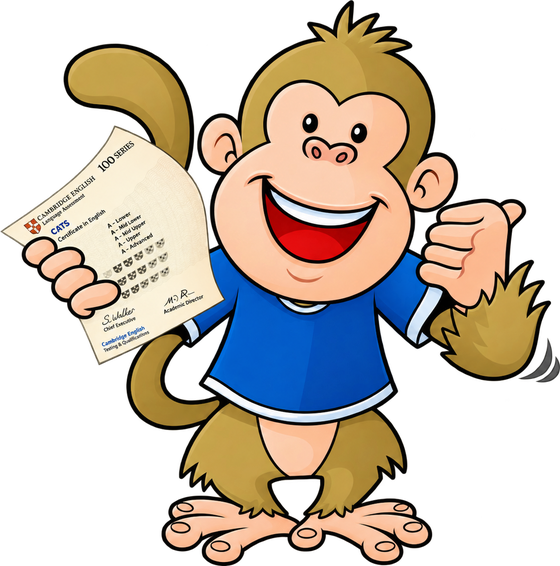

Pre A1 Starters
A1 Movers
El espacio para las familias de Cambridge del Colegio Santa María: cómo es la prueba, qué material tenéis y cómo acompañar en casa.
En Cambridge no se aprueba ni se suspende. Cada prueba se califica con hasta cinco escudos, y todos los niños y niñas reciben su certificado.
Cómo es el examen
Tres pruebas, y en todas empiezan con un ejemplo resuelto. Pulsa cada una para ver sus partes.
Palabras a repasar
Las palabras marcadas en la Monkey List que tienen que llevar al día. Esta vez son las 20 primeras después de los colores.
Así es el test: dicto 12 de estas palabras en inglés, con audio nativo, despacio y tres veces. A la izquierda las escriben en inglés y a la derecha en español.
Palabras a repasar
Las palabras marcadas en la Monkey List que tienen que llevar al día. Empezamos por el primer tema: 1. Wild animals!
Así es el test: dicto 12 de estas palabras en inglés, con audio nativo, despacio y tres veces. A la izquierda las escriben en inglés y a la derecha en español.
Lo práctico
Fecha, inscripción y resultados, de un vistazo.
Material del colegio
Lo que recibe vuestro hijo o hija desde el centro.
Libro de preparación: Fun for StartersFun for Movers. El colegio hace el pedido de los libros y se entregarán al alumnado en cuanto lleguen. Mientras tanto, seguimos trabajando con normalidad en la sesión semanal.
Sesión de preparación. Una vez por semana, en horario escolar.
Mis materiales
Recursos que he preparado para practicar en casa. Funcionan en el móvil, la tablet o el ordenador.
Vocabulario
Speaking
Así es un Speaking real
Juegos
Cómo acompañar en casa
No hace falta saber inglés para ayudar. Lo que más cuenta es la constancia y que lo vivan como un juego.
Poco y a menudo
Diez minutos casi cada día rinden más que una hora el fin de semana.
Las palabras marcadas, al día
En clase vamos marcando palabras de la Monkey List. Repasadlas en casa: en los tests de vocabulario dicto 12 de ellas en inglés y las escriben en inglés y en español.
Ojo con la ortografía
En Reading and Writing las respuestas solo cuentan si están bien escritas. Copiar y deletrear en voz alta ayuda mucho.
Que hablen, aunque fallen
En el Speaking se valora que respondan y añadan algo más. Mejor «I've got a dog. He's very funny» que solo «Yes».
Rutina de 10 minutos
Una idea sencilla para cada día que facilita la práctica en casa: poco tiempo, sin preparación y con los recursos del portal a mano.
Repasad en la Monkey List las palabras marcadas: escuchad el audio y repetidlas en voz alta.
Un juego de vocabulario de «Mis materiales». Mejor si os enseña cómo se juega.
Ortografía: deletrea cinco palabras en voz alta y luego las escribe. Comprobad juntos con la lista.
Speaking: pregunta «What's your name?», «How old are you?» o «What's your favourite colour?» y que responda con una frase completa.
Speaking: buscad dos dibujos parecidos (o un cuento) y que diga las diferencias o cuente la historia en inglés.
Mini test casero: dictadle seis palabras de la lista; las escribe en inglés y en español, como en clase.
Descanso… o algo en inglés por gusto: una canción, unos dibujos o un juego.
Frases salvavidas para el Speaking
Frases para pedir ayuda y respuestas modelo a preguntas típicas del examinador, ordenadas como en el examen. Pulsad 🔊 para oírla en inglés, y luego que la digan con sus propias cosas: su nombre, su mascota, su comida favorita…
Si no entienden o se bloquean
- Sorry, can you say that again, please?Perdone, ¿puede repetirlo, por favor?
- Sorry, I don't understand.Perdone, no lo entiendo.
- Can you speak more slowly, please?¿Puede hablar más despacio, por favor?
- I'm not sure. I think it's a cat.No estoy seguro. Creo que es un gato. (mejor intentarlo que callar).
Al entrar y al salir
- Examinador: «What's your name?»My name is Lucía.Me llamo Lucía.
- Examinador: «How old are you?»I'm eight.Tengo ocho años.
- Examinador: «Thank you. Goodbye!»Thank you. Goodbye!Gracias. ¡Adiós! (despedirse siempre con una sonrisa).
Starters · Señalar en el dibujo grande
- Examinador: «Where's the dog?»It's here, under the table.Está aquí, debajo de la mesa (señalando).
- Examinador: «Where's the ball?»It's here, next to the tree.Está aquí, al lado del árbol.
Starters · Preguntas sobre el dibujo
- Examinador: «What's this?»It's a bike.Es una bici.
- Examinador: «What colour is the bike?»It's red.Es roja.
- Examinador: «How many birds are there?»There are three birds.Hay tres pájaros.
- Examinador: «What's the boy doing?»He's running.Está corriendo.
Starters · Preguntas sobre ellos
- Examinador: «Have you got a pet?»Yes, I've got a dog. He's very funny.Sí, tengo un perro. Es muy divertido. (Responder y añadir algo más.)
- Examinador: «What's your favourite food?»My favourite food is pizza.Mi comida favorita es la pizza.
- Examinador: «Do you like football?»Yes, I do. I play football with my friends.Sí. Juego al fútbol con mis amigos.
- Examinador: «Tell me about your friend.»My friend's name is Pablo. He's nine.Mi amigo se llama Pablo. Tiene nueve años.
Movers · Encontrar las diferencias
- Examinador: «Here the man has got a hat. Here…»…he hasn't got a hat.Aquí el hombre lleva sombrero. Aquí… no lleva sombrero.
- Examinador: «In this picture there are two cats. In this picture…»…there are four cats.En este dibujo hay dos gatos. En este… hay cuatro.
- Examinador: «Here the girl is sitting. Here…»…she's standing.Aquí la niña está sentada. Aquí… está de pie.
Movers · Contar la historia
- Examinador: «Look at the pictures. They show a story. Now you tell the story.»The boy is sad because he can't find his dog.El niño está triste porque no encuentra a su perro.
- Then he looks under the bed, but the dog isn't there.Luego mira debajo de la cama, pero el perro no está.
- In the end he finds the dog in the garden. Now he's happy.Al final encuentra al perro en el jardín. Ahora está contento.
Movers · El intruso
- Examinador: «Which one is different? Why?»The banana, because the others are animals.El plátano, porque los otros son animales.
- Examinador: «Which one is different? Why?»The bus, because you can't wear it.El autobús, porque no se puede llevar puesto (los otros son ropa).
Movers · Preguntas sobre ellos
- Examinador: «What do you do after school?»I go to the park with my friends.Voy al parque con mis amigos.
- Examinador: «What do you do at the weekend?»On Saturday I play football, and on Sunday I visit my grandma.El sábado juego al fútbol y el domingo visito a mi abuela.
- Examinador: «Tell me about your best friend.»My best friend is called Marta. She's got long hair and she likes swimming.Mi mejor amiga se llama Marta. Tiene el pelo largo y le gusta nadar.
- Examinador: «What's the weather like today?»It's sunny and hot.Hace sol y calor.
Recursos oficiales de Cambridge
Las páginas de Cambridge University Press & Assessment, en inglés.
- Formato oficial de Pre A1 StartersCada parte del examen explicada por Cambridge.
- Preparación de Pre A1 StartersExámenes de muestra, listas de vocabulario y actividades.
- Formato oficial de A1 MoversCada parte del examen explicada por Cambridge.
- Preparación de A1 MoversExámenes de muestra, listas de vocabulario y actividades.
- Apoyo para familiasConsejos de Cambridge para acompañar a vuestros hijos.
- Actividades online gratuitasJuegos y ejercicios oficiales por nivel.
- Qué sabe hacer un niño en cada nivelLos objetivos de Starters, Movers y Flyers (PDF).
Preguntas frecuentes
Las dudas que más me llegan.
¿Se puede suspender?
No. Todos reciben su certificado. Cada prueba se puntúa de uno a cinco escudos, y cinco escudos significan que han respondido bien a casi todo.
¿Cuánto dura el examen?
Unos 45 minutos en total: Listening (unos 20 min), Reading and Writing (20 min) y Speaking (de 3 a 5 min).
Algo más de una hora en total: Listening (unos 25 min), Reading and Writing (30 min) y Speaking (de 5 a 7 min).
¿Estará solo o sola con el examinador en el Speaking?
Sí, pero no de golpe. Una persona conocida que habla su idioma, como su maestro, le presenta al examinador y le explica en español qué va a hacer.
No sé inglés, ¿cómo le ayudo?
Con interés y rutina. Los recursos de esta página tienen audio y traducción, así que podéis jugar juntos aunque no habléis inglés. Preguntadle qué ha aprendido y pedidle que os lo enseñe.
¿Qué pasa si se pone nervioso o nerviosa?
Es normal. Por eso en clase practicamos con situaciones de examen reales: para que el día de la prueba todo le resulte familiar. Como dice el propio Cambridge, se trata de disfrutar y aprender pasándolo bien.
¿Cuándo es el examen?
Os comunicaré la fecha y los detalles en cuanto estén confirmados.
¿Cómo veremos los resultados?
En la web de Cambridge, con un usuario y una contraseña que os daremos más adelante. Guardadlos en un lugar seguro: sin ellos no podréis consultar los resultados.